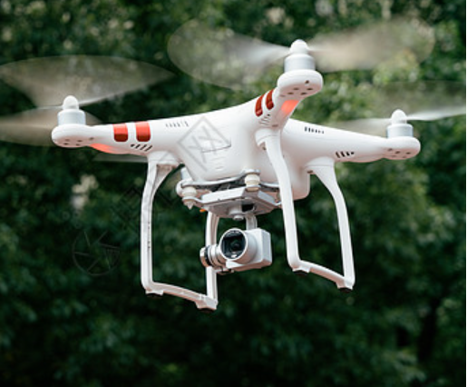

I love Hospitality Management, used to work in Public relations agency, and passionate about aerial Photography with Drones 🚁.I Learned code on recent days. Coding is not just my craft; it's my tool to sculpt immersive and delightful experiences on the vast canvas of the world wide web 🌍.
DISCOVER YICHENAs a student of EHL hospitality business school, my focus extends beyond the ordinary. I delve into the intricacies of hospitality management, where each detail contributes to a harmonious guest experience. From understanding guest needs to ensuring operational excellence, I am dedicated to crafting memorable moments in the world of hospitality.
During my time at my PR agency Ninemer Communications, I dived deep into the intricacies of client management, communication, and project coordination. The real-world challenges became my lessons, and the fast-paced environment honed my skills in communication and strategic planning.
A passionate explorer of the skies, I find joy in capturing breathtaking moments through aerial photography with drones. The unique perspective adds a new dimension to my creativity, mirroring my enthusiasm for pushing boundaries in the digital realm. 